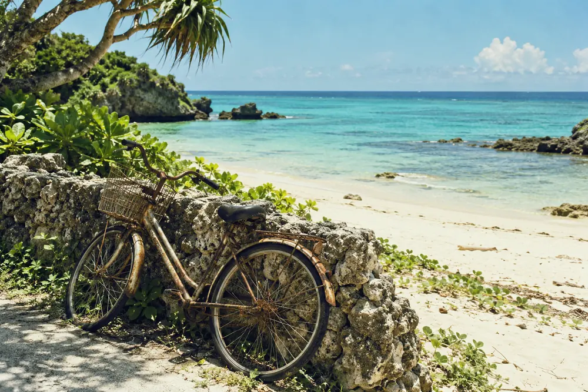
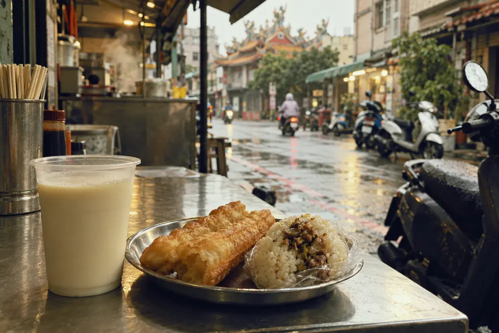

旅する休暇
Postcards
2年目から年1回の5連休と旅行補助50,000円。行き先は自由で、帰ったらサロンでお客様に紹介できます。
-

沖縄借りた自転車で島を一周して2時間。帰りの船を1本遅らせて夕日まで見てきました。2022年入社・添乗員
-

台南朝6時の屋台で豆乳と揚げパン。台南は朝ごはんのために早起きする町でした。2024年入社・旅のサロン
-
秋田露天風呂までは雪の中を10歩でした。シニアのご夫婦にすすめる宿が決まりました。2019年入社・エリアマネージャー
制度一覧
- 旅する休暇入社2年目から年1回。行き先は自由
- 5連休＋50,000円
- 年間休日シフト制。有給の平均取得14.2日（2025年度）
- 124日
- 添乗手当宿泊を伴う添乗。日帰り3,000円。振替休日あり
- 1日8,000円
- 資格合格祝い金総合に合格したとき。国内・語学は各30,000円
- 100,000円
- 自社企画旅の割引家族も対象
- 30%引き
- 奨学金返還支援最長5年
- 月15,000円
- 地元勤務コース配属も異動も出身地の地域ブロック内
- 選択制
- 産休・育休の復帰率2023〜2025年度。男女の育休取得者を含む
- 96%